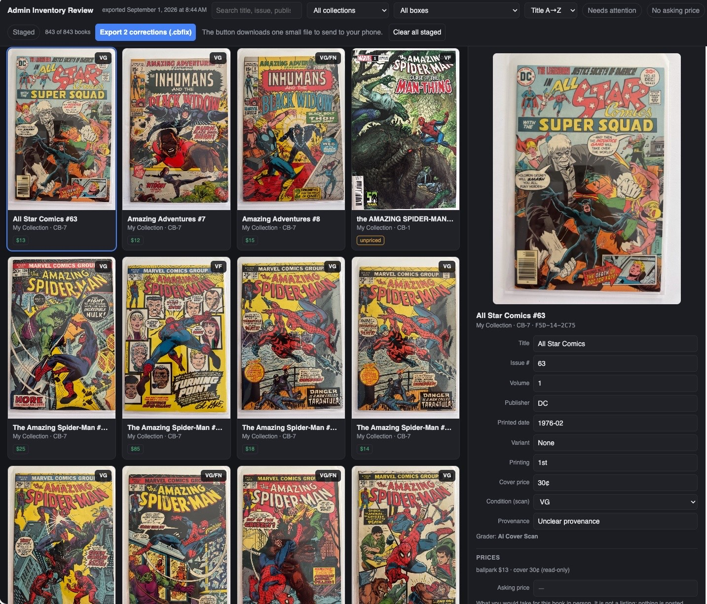
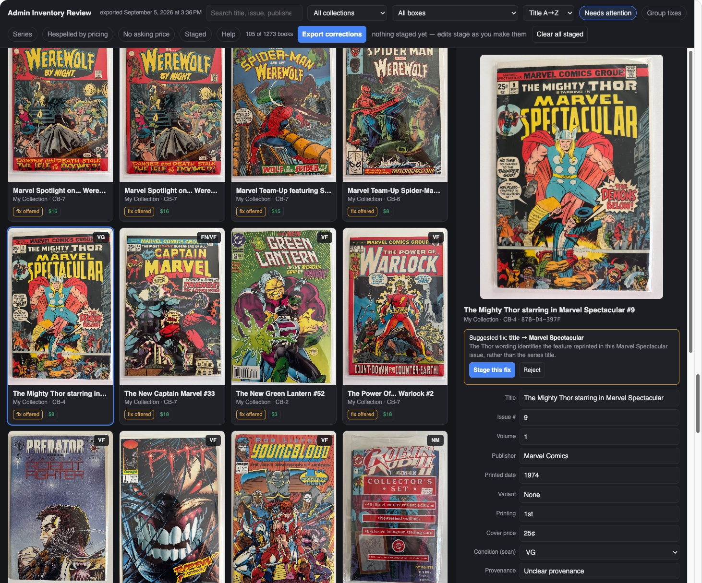
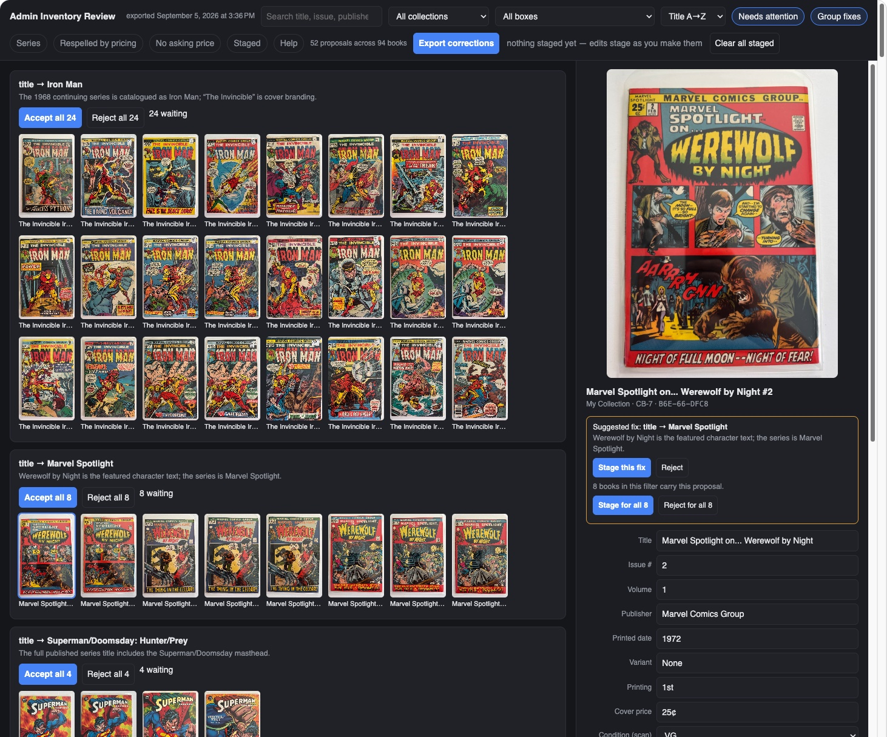
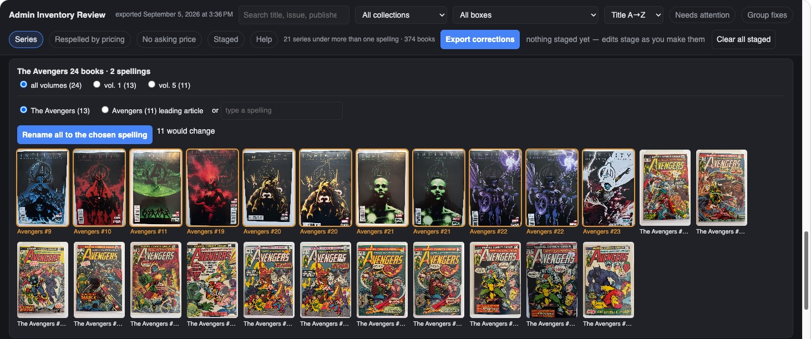
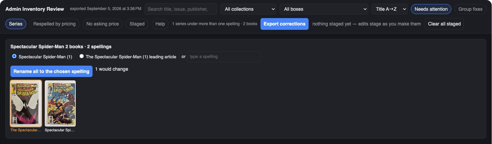

How To
The Admin Review
Your phone holds the inventory. It is the system of record, and nothing on this page changes that. But a phone screen is a small place to reprice three hundred books, and the moment for a bigger one comes right after a ballpark run: the records are fresh, the numbers are new, and whatever the AI got almost-right is easiest to fix before anything gets printed on a label.
Export Admin Review
Export Admin Review sends the entire inventory to a Mac or PC. Move the file however you like (AirDrop, a file exchange, email, whatever is easiest), open it, and you have the big-screen way to work through the whole collection: fix inventory mistakes, set asking prices in one pass, override a grade when your eyes disagree with the scan (the book's Grader becomes Owner, so the change carries your name, and a professional grade stays locked), record provenance, and look up prices with real tabs open. Filters like Needs attention and No asking price find the work for you. When you are done, the fixes travel back in one small file: import it on the phone and the inventory catches up. The Admin Review is a workbench, not a second copy of the collection. Nothing lives there, nothing drifts, and the phone remains the record the workbench answers to.

The page suggests, you approve
A scan gets most of a record right and a few things almost right, and the almost-rights follow patterns: the cover branding read as the title, a featured character read as the series, a masthead trimmed to its second half. The page knows those patterns. Needs attention narrows the grid to the books it has a suggested fix for, each wearing a fix offered pill, and the panel says what the fix is and why: the Thor wording identifies the feature reprinted in this Marvel Spectacular issue, rather than the series title. Stage the fix, or reject it and the book keeps what it has. Nothing changes without your click.

The click scales, and it scales from here too, without leaving this view. When the same proposal applies to more books than the one in the panel, it says so (8 books in this filter carry this proposal) and offers Stage for all 8 beside the single one. Group fixes is the same power arranged the other way round: it turns the grid into one card per proposal: every Iron Man the scan called The Invincible Iron Man in one row with Accept all 24 and Reject all 24 at its head, then the Marvel Spotlight row, then the next. Fifty-two proposals across ninety-four books becomes a short list of decisions, each made once.

One spelling per title
Scans are read one cover at a time, and covers disagree with each other. One issue says The Avengers, the next says Avengers, and a run ends up filed under two names, which means two search results, two sort positions, and two entries on every report. The Series filter finds those. Tap it and the page collapses the grid into one row per title that has more than one spelling, with a count of books and a count of spellings: The Avengers, 24 books, 2 spellings. Each row lists the spellings it found, with how many books use each, and a field to type a third if neither is the one you want.
The rename is scoped the way series actually work. Pick all volumes and the whole title takes the chosen spelling; pick vol. 1 or vol. 5 and only that run changes, because the 1963 series and the 2013 series may deserve different names. Before anything moves, the row says how many books would change and outlines their covers first, so you can see exactly which books are about to be renamed. One click renames them all, the change stages with the rest of your corrections, and it rides back to the phone in the same small file.
Sometimes the right answer is to leave it. In the row below, volume 1 is The Avengers and volume 5 is Avengers, which is how the two series were actually titled, so the split is a fact about the books rather than a scanning error. The row shows the choice; it does not make it for you.

To skip the judgment calls and go straight to the mistakes, turn on Needs attention with Series. The rows narrow to the spellings the page thinks are wrong rather than merely different: here one series and two books, a Spectacular Spider-Man filed once with the leading article and once without. One would change, and one click changes it. That is the morning pass: Needs attention first, until the count reads zero, then the rest of the Series rows at leisure.

Why it sits here in the workflow
Scan, ballpark, desk pass, print: the desk pass is the quality gate before barcode labels make the records physical. The labels print each book's title, issue, and grade on the sticker, so a grade you meant to override or an issue number the scan misread is cheapest to fix now, on the big screen, with the whole box in front of you. Exports never spend credits: the desk pass is free, however often you take it.
The desk is also where the next step picks itself. Every cover big on one screen is the best look you will ever get at the whole box, and the books worth an Advanced Grading stand out at a glance: the strong copies, the surprising ballparks, the maybes your eyes want a closer verdict on. That workup is the homework before a professional grading service ever gets involved, and The grading decision walks one book through exactly that call.
See it in real life: the big-screen habit drafts listings in The listing desk, and the FAQ's pricing answer explains why desk research beats phone guessing. The kiosk, the other big-screen export, has its own guide.